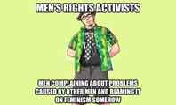

< < < Back
Is Spiked Online Editor Luke Gittos A Sexual Cuckservative? – Return Of Kings
Luke Gittos, the editor of the law section of the establishment-left publication Spiked Online, has penned a short piece attacking Roosh Valizadeh. The piece is also a broadside against what Gittos calls the “pick-up industry.” Into the same pot are thrown the hapless MRAs, denounced by Gittos as a “merry band of saddos.”
Why is a writer who purports to be so against rape culture hysteria that he has just written a book on the subject so keen to lash out against Roosh and the broader men’s movement?
Never let a good crisis go to waste
Gittos’ article for Spiked coincides with the petition to ban Roosh’s books from Amazon, and, tellingly, with the publication of his own book, “Why Rape Culture is a Dangerous Myth: From Steubenville to Ched Evans.” The conclusion of the article is, predictably given Spiked’s dogmatic stance on free speech, that Roosh’s ooks should not be banned.
On the other hand, he makes sure to throw in ample scorn for Roosh and the “pick-up industry,” distancing himself from such undesirable male behaviour as, er, having a sexual strategy.
MRA? PUA? Same difference.
The problems with Gittos’ facile attempt to insinuate himself and Spiked within the bounds of “kosher” discourse and men’s groups outside it are glaring. For starters, much like the SJW’s he would otherwise like to distance himself from, Gittos misattributes Roosh’s “argument” for the legalisation of rape on private property to one of his books, rather than to his website, evidencing a lack of research.
Neither has he picked up that Roosh himself told Canadian journalist Ezra Levant in an interview that the article was tongue in cheek and intended to stir debate. Further, Gittos places Roosh in the “MRA” camp, on the basis of “[A] quick perusal” of Roosh’s Youtube channel.” Again, the learned barrister turned solicitor shows a concerning lack of attention to detail. Roosh, as anyone who reads the manosphere will know, has distanced himself from the Men’s Rights Movement.
Moreover, Gittos appears to be ideologically confused. On the one hand he has written a book entitled “Why Rape Culture Is A Dangerous Myth,” and on the other hand he writes the Men’s Rights Movement off out of hand as a “…merry band of saddos [that] believes that the world is being controlled by a feminist conspiracy that is enslaving men.”

I presume from the title of Gittos’ book that he thinks that the politically motivated drive to inflate the conviction rate for sexual offences is not a welcome phenomenon. I also presume that, as a columnist for Spiked Online, he is not blind to the fact such changes in policy do not arise in a vacuum but are rather the product of political trends of the day.
And what popular political movement could possibly be militating for increased rape convictions at any cost, including the due-process rights of innocent men?
You are all basement-dwelling neckbeard virgins
Without engaging in any further inquiry into whether the “Men’s Rights Movement” has any legitimate claims or grievances whatsoever, Gittos launches into a little attack on PUAs. “Roosh V, Julien Blanc and the rest of their ilk are utter tools,” opines our moral crusader, carefully choosing his targets. In another broad brush denunciation, he writes off the thousands of men who have bought Roosh’s books as:
likely to be lonely, desperate, web-based singletons. These men pose no threat to women. At worst, they might repulse them when they deploy Roosh’s creepy tactics.
Where have we heard this language? It’s very much the register of Social Justice Warriors, is it not? Lonely, desperate, web-based singletons. Creepy. It’s a surprise that Gittos has made no mention of basements and fedoras.
Knocking down the PUA straw man

Having completed his out-of-hand (and scantily researched) dismissal of two rather broad and diverse movements, our receding-chinned jurisprudent proceeds to give us his learned view on the “state of contemporary intimacy”:
Today, the process of picking up women is seen by many as too risky to involve oneself in emotionally. While pick-up artists claim to be masters of charming women, their industry only exists because people are becoming more wary of the emotional risk inherent in the act of seduction. The idea that you might approach a member of the fairer sex, make a prat of yourself and walk away with your tail between your legs is coming to be seen as a needless and terrifying emotional risk.
What utter prattle. One of the very foundations of the pick-up canon is the need to embrace this very “emotional risk inherent in the act of seduction.” No pick-up guru worth his salt has ever sold a product by promising clients that he could remove the trauma of rejection.
Budding PUAs are told to grow a pair, get out there, and make themselves known to women. They are told that rejections are part and parcel of the life of a sexually active man, not something to be brushed under the carpet by retreating into celibacy or online dating.
Get out there and approach, guys.
Gittos continues:
Endless apps, agencies and pseudo-professionals now make money from removing the risk of emotional harm and selling seduction to sad young men as a series of tricks, lines and processes. By attempting to formalise seduction in this way, the pick-up industry strips the human process of charming a woman into bed of all its meaning.
Again, Gittos shows he has not done his homework. If he applies the same rigour to preparing his legal cases, his clients should be worried. Yes, dating apps thrive on a fear of emotional involvement in the dating process. By making everything remote and impersonal, they make things easy for their core market: Western women with no social skills and an imperative towards ubiquitous comfort, and Western men who have insufficient testosterone to grapple with the trauma of the cold approach.
To say, however, that pick-up artists attempt to remove the risk of emotional harm is baloney. Pick-up artists preach the absorption of that emotional harm. They do it by telling students to man the fuck up and approach, taking rejection as a fact of life.
Thou shalt not do anything to improve thy lot!
Gittos then shows his true ideological colours by railing against PUAs employing “tricks, lines and processes.” Where else have we heard this vehement rubbishing of the very notion that men might consider integrating some direction or structure into their pursuit of women?
Oh yes, I remember now. It’s the age-old refrain of women speaking down to beta males. The same mantra which has been picked up by modern Feminists in their attempts to shame disillusioned modern men with ideas of self-determination:
Just be yourself.
Any ex-beta knows the gospel inside out: You’re not getting laid? Don’t worry about it. Just be yourself. Don’t examine what you’re doing wrong. Don’t try to change your personality. You’re a nice guy. You’ll be just fine. Eventually you’ll find a woman who likes you for who you are. Eventually a woman will end up in your life “randomly.” Don’t listen to the PUA guys. Don’t try to copy the asshole who has his pick of the 8’s, 9’s and 10’s.
Gittos is echoing the same script, beloved of overbearing mothers, female “friends” of friend-zoned beta males, feminists, and other assorted women with a vested interest in keeping “nice guys” nice (and celibate). Why is he doing this?
Well, he has a reputation as a man of letters to curate. As a Spiked columnist and advocate of “freeze peach,” he’s already a bit suspect in the eyes of the chatterati. By lashing out at Roosh, he is trying to signal to his peers on the Crouch End dinner-party circuit that he is not quite beyond the pale. He’s all for freedom of whatever, just not the freedom of men to exercise any influence on their own sex lives.
The arrival of Sexual Cuckservatism
In a sense, Luke Gittos is a Cuckservative. He rails against all the issues of the day of concern to conservatives and libertarians: sexual assault Kangaroo courts on campus, media show-trials of men accused of rape, the panic about “rape culture,” and so on.
He’s careful, however, to do it in the name of abstract values like freedom of speech and due process. Showing a breathtaking capacity for doublethink, he’s written articles entitled “Why is the CPS spinning rape stats?” and “We must not give in to the rape panic,” and then mocked MRAs for believing “that the world is being controlled by a feminist conspiracy that is enslaving men.”
Would you take dating advice from this man?
In sum, this form of Sexual Cuckservatism could be defined as a willingness to criticise the left’s abhorrent behaviour (obsession with rape culture, its propensity for social media lynchings and its militancy in banning messages they disagree with), whilst engaging in the very same male-shaming rhetoric of the left and writing off anti-feminist movements in the language of the left, rather than accepting them for what they are: a legitimate reaction to the corruption of leftist and feminist ideology of every aspect of public life.
The lesson garnered from Mr Gittos’ bizarre outburst should be clear to any reader of Return of Kings, including those who had up until now laboured under the misapprehension that Spiked Online was “on the same team”: not every voice purporting to speak in favour of free speech and due process is automatically on the side of right reason simply because it appeals to your libertarian sensibilities.
Read More: How America’s New Nobility Has Forgotten Its Obligation To The Country


{kind=link}
{kind=link}
{kind=link}
{kind=link}
{kind=link}
{kind=link}